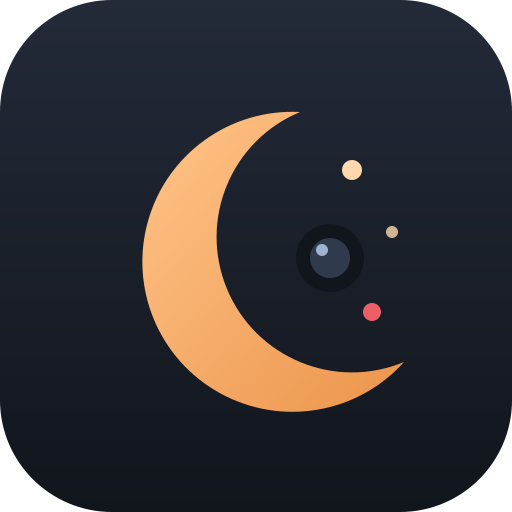

폰 두 대로 쓰는 간단한 아기 모니터
영상은 두 폰 사이에서 암호화되어 전달되며 어디에도 저장되지 않습니다.
송출을 시작하면 접속 코드가 만들어집니다.
후면 카메라가 화질이 좋고, 화면 불빛이 아기 쪽을 향하지 않습니다.
허용한 기기는 다음부터 이 코드로 자동 연결됩니다.
카메라 폰 화면에 이 기기 이름 (으)로 요청이 표시됩니다. 이름은 설정에서 바꿀 수 있습니다.
영상 아래 막대가 노란 선을 1초 이상 넘으면 진동·알림음으로 알려 줍니다.
카메라 폰과 보는 폰이 서로 다른 망(예: 집 와이파이 ↔ LTE)에 있으면 TURN 중계 서버가 필요할 수 있습니다. Metered 무료 계정의 앱 이름과 API Key를 넣어 주세요.
이 사이트에 기본 TURN 설정이 들어 있습니다. 아래를 비워 두면 기본 설정을 사용합니다.